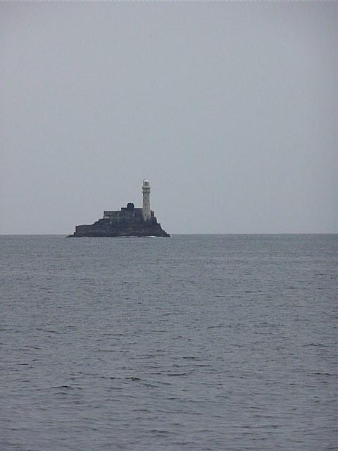

Ireland is a small island on the edge of a large ocean. Atlantic changes arguably impact Ireland more than any other country. For example, in 2015, when the record global surface temperatures were reached, Ireland had below average temperatures due to a cool Atlantic. Irish temperatures bucking the trend in 2015 brings sharp focus to the fact that understanding Ireland’s place in a changing climate requires understanding the changing Atlantic.
The A4* project focuses on three areas of physical oceanography and climate research where impactful and strategically important progress can be made. These areas are: understanding Atlantic variability and its connection to the Irish shelf (WP1); advancing knowledge of Irish sea level change in an Atlantic context (WP2); and development of predictive capacity on decadal timescales for planning and management (WP3).
A4 is lead by Maynooth University, in partnership with Trinity College Dublin, and brings together international partners from Germany, the UK, and the USA.
*A4: Aigéin, Aeráid, agus athrú Atlantaigh = Oceans, Climate, and Atlantic Change
